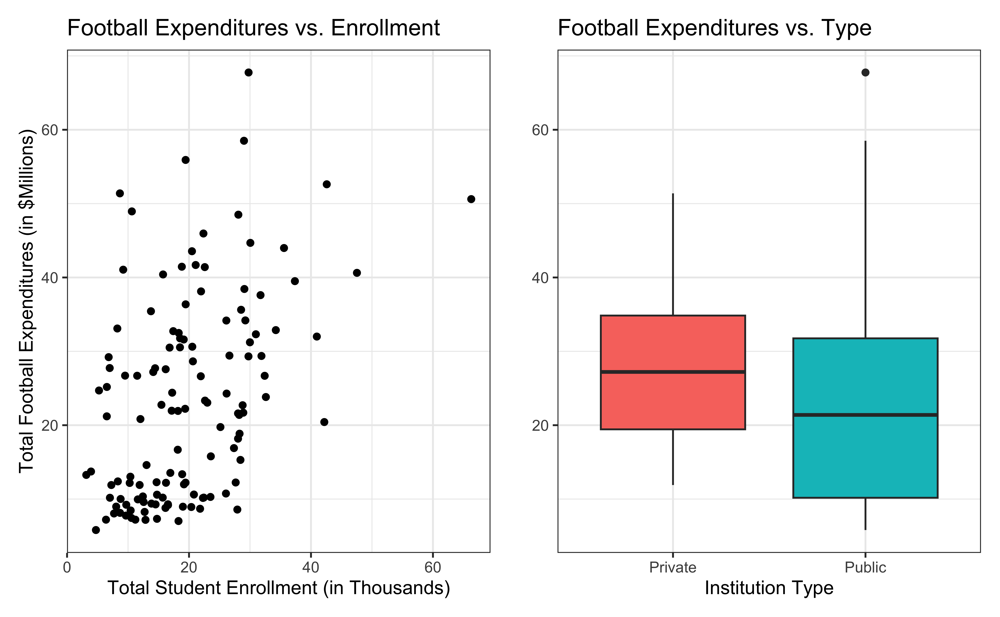

# load packages
library(tidyverse)
library(tidymodels)
library(knitr)
library(kableExtra)
library(patchwork)
# set default theme in ggplot2
ggplot2::theme_set(ggplot2::theme_bw())Inference for regression
Announcements
Lab 03 due TODAY at 11:59pm
Click here to learn more about the Academic Resource Center
Statistics experience due Tuesday, April 22
Poll: Office hours availability
Topics
Understand statistical inference in the context of regression
Describe the assumptions for regression
Understand connection between distribution of residuals and inferential procedures
Conduct inference on a single coefficient
Computing setup
Data: NCAA Football expenditures
Today’s data come from Equity in Athletics Data Analysis and includes information about sports expenditures and revenues for colleges and universities in the United States. This data set was featured in a March 2022 Tidy Tuesday.
We will focus on the 2019 - 2020 season expenditures on football for institutions in the NCAA - Division 1 FBS. The variables are :
total_exp_m: Total expenditures on football in the 2019 - 2020 academic year (in millions USD)enrollment_th: Total student enrollment in the 2019 - 2020 academic year (in thousands)type: institution type (Public or Private)
football <- read_csv("data/ncaa-football-exp.csv")Univariate EDA

Bivariate EDA

Regression model
exp_fit <- lm(total_exp_m ~ enrollment_th + type, data = football)
tidy(exp_fit) |>
kable(digits = 3)| term | estimate | std.error | statistic | p.value |
|---|---|---|---|---|
| (Intercept) | 19.332 | 2.984 | 6.478 | 0 |
| enrollment_th | 0.780 | 0.110 | 7.074 | 0 |
| typePublic | -13.226 | 3.153 | -4.195 | 0 |
For every additional 1,000 students, we expect an institution’s total expenditures on football to increase by $780,000, on average, holding institution type constant.
From sample to population
For every additional 1,000 students, we expect an institution’s total expenditures on football to increase by $780,000, on average, holding institution type constant.
. . .
- This estimate is valid for the single sample of 127 higher education institutions in the 2019 - 2020 academic year.
- But what if we’re not interested quantifying the relationship between student enrollment, institution type, and football expenditures for this single sample?
- What if we want to say something about the relationship between these variables for all colleges and universities with football programs and across different years?
Inference for regression
Statistical inference
Statistical inference provides methods and tools so we can use the single observed sample to make valid statements (inferences) about the population it comes from
For our inferences to be valid, the sample should be representative (ideally random) of the population we’re interested in

Inference for linear regression
Inference based on ANOVA
Hypothesis test for the statistical significance of the overall regression model
Hypothesis test for a subset of coefficients
Inference for a single coefficient \(\beta_j\) (today’s focus)
Hypothesis test for a coefficient \(\beta_j\)
Confidence interval for a coefficient \(\beta_j\)
Linear regression model
\[ \begin{aligned} \mathbf{y} &= \text{Model} + \text{Error} \\[5pt] &= f(\mathbf{X}) + \boldsymbol{\epsilon} \\[5pt] &= E(\mathbf{y}|\mathbf{X}) + \mathbf{\epsilon} \\[5pt] &= \mathbf{X}\boldsymbol{\beta} + \mathbf{\epsilon} \end{aligned} \]
. . .
We have discussed multiple ways to find the least squares estimates of \(\boldsymbol{\beta} = \begin{bmatrix}\beta_0 \\\beta_1\end{bmatrix}\)
- None of these approaches depend on the distribution of \(\boldsymbol{\epsilon}\)
Now we will use statistical inference to draw conclusions about \(\boldsymbol{\beta}\) that depend on particular assumptions about the distribution of \(\boldsymbol{\epsilon}\)
Linear regression model
\[\begin{aligned} \mathbf{Y} = \mathbf{X}\boldsymbol{\beta} + \boldsymbol{\epsilon}, \hspace{8mm} \boldsymbol{\epsilon} \sim N(\mathbf{0}, \sigma^2_{\epsilon}\mathbf{I}) \end{aligned} \]
such that the errors are independent and normally distributed.
. . .
- Independent: Knowing the error term for one observation doesn’t tell us about the error term for another observation
- Normally distributed: The distribution follows a particular mathematical model that is unimodal and symmetric
Describing random phenomena
There is some uncertainty in the error terms (and thus the response variable), so we use mathematical models to describe that uncertainty.
Some terminology:
Sample space: Set of all possible outcomes
Random variable: Function (mapping) from the sample space onto real numbers
Event: Subset of the sample space, i.e., a set of possible outcomes (possible values the random variable can take)
Probability density function: Mathematical function that produces probability of occurrences for events in the sample space for a continuous random variable
Distribution of error terms
The error terms follow a (multivariate) normal distribution with mean \(\mathbf{0}\) and variance \(\sigma^2\mathbf{I}\)
\[f(\boldsymbol{\epsilon}) = \frac{1}{(2\pi)^{n/2}|\sigma^2_{\epsilon}\mathbf{I}|^{1/2}}\exp\Big\{-\frac{1}{2}(\boldsymbol{\epsilon} - \mathbf{0})^\mathsf{T}(\sigma^2_{\epsilon}\mathbf{I})^{-1}(\boldsymbol{\epsilon}- \mathbf{0})\Big\}\]
Visualizing distribution of \(\mathbf{y}|\mathbf{X}\)
\[ \mathbf{y}|\mathbf{X} \sim N(\mathbf{X}\boldsymbol{\beta}, \sigma_\epsilon^2\mathbf{I}) \]

Expected value
Let \(\mathbf{z} = \begin{bmatrix}z_1 \\ \vdots \\z_p\end{bmatrix}\) be a \(p \times 1\) vector of random variables.
. . .
Then \(E(\mathbf{z}) = E\begin{bmatrix}z_1 \\ \vdots \\ z_p\end{bmatrix} = \begin{bmatrix}E(z_1) \\ \vdots \\ E(z_p)\end{bmatrix}\)
Expected value
Let \(\mathbf{A}\) be an \(n \times p\) matrix of constants, \(\mathbf{C}\) a \(n \times 1\) vector of constants, and \(\mathbf{z}\) a \(p \times 1\) vector of random variables. Then
\[ E(\mathbf{Az}) = \mathbf{A}E(\mathbf{z}) \]
. . .
\[ E(\mathbf{Az} + \mathbf{C}) = E(\mathbf{Az}) + E(\mathbf{C}) = \mathbf{A}E(\mathbf{z}) + \mathbf{C} \]
Expected value of the response
Show \[ E(\mathbf{y}|\mathbf{X}) = \mathbf{X}\boldsymbol{\beta} \]
Variance
Let \(\mathbf{z} = \begin{bmatrix}z_1 \\ \vdots \\z_p\end{bmatrix}\) be a \(p \times 1\) vector of random variables.
. . .
Then \(Var(\mathbf{z}) = \begin{bmatrix}Var(z_1) & Cov(z_1, z_2) & \dots & Cov(z_1, z_p)\\ Cov(z_2, z_1) & Var(z_2) & \dots & Cov(z_2, z_p) \\ \vdots & \vdots & \dots & \cdot \\ Cov(z_p, z_1) & Cov(z_p, z_2) & \dots & Var(z_p)\end{bmatrix}\)
Variance
Let \(\mathbf{A}\) be an \(n \times p\) matrix of constants and \(\mathbf{z}\) a \(p \times 1\) vector of random variables. Then
\[ Var(\mathbf{z}) = E[(\mathbf{z} - E(\mathbf{z}))(\mathbf{z} - E(\mathbf{z}))^\mathsf{T}] \]
. . .
\[ \begin{aligned} Var(\mathbf{Az}) &= E[(\mathbf{Az} - E(\mathbf{Az}))(\mathbf{Az} - E(\mathbf{Az}))^\mathsf{T}] \\[8pt] & = \mathbf{A}Var(\mathbf{z})\mathbf{A}^\mathsf{T} \end{aligned} \]
Variance of the response
Show
\[ Var(\mathbf{y}|\mathbf{X}) = \sigma^2_\epsilon\mathbf{I} \]
Linear transformation of normal random variable
Suppose \(\mathbf{z}\) is a (multivariate) normal random variable such that \(\mathbf{z} \sim N(\boldsymbol{\mu}, \boldsymbol{\Sigma})\)
A linear transformation of \(\mathbf{z}\) is also multivariate normal, such that
\[ \mathbf{A}\mathbf{z} + \mathbf{B} \sim N(\mathbf{A}\boldsymbol{\mu} + \mathbf{B}, \mathbf{A}\boldsymbol{\Sigma}\mathbf{A}^\mathsf{T}) \]
Explain why \(\mathbf{y}|\mathbf{X}\) is normally distributed.
Recap
Introduced statistical inference in the context of regression
Described the assumptions for regression
Connected the distribution of residuals and inferential procedures
Next class
Confidence intervals for \(\hat{\beta}_j\)
Hypothesis testing based on ANOVA